Market Square and Old Town


The Historic Centre of Wroclaw is stunning with its coloured buildings, chiefly the Market Square with the Gothic Town Hall (on the picture above).There are Solny Square, Saint Elizabeth's Basilica, Saint Mary Magdalene church, Hansel & Gretel houses and other historical monuments with encient architecture.
Also here you can find a lot of clubs, cafes and restaurants for different tastes and cuisines.
In winter time Christmas Market takes place on the Market Square. The Christmas Fair on the main square in Wrocław is one of the most colorful and unforgettable festivities, making you feel like a hero of a fairy tale. According to the tradition established over the years, at the very beginning of Świdnicka Street in Wrocław, a huge gate will be erected, guarded by overgrown gnomes.One of them is Prezentus, a favorite of Wrocław's children. It is enough to tap his hat three times to make any wish come true.
Endless rows of souvenir shops with the most diverse products of local craftsmen: from jewelry to delicious pastries and aromatic Wroclaw mulled wine
The Wrocław mulled wine “Grzaniec” is especially popular at the fair. This hot red wine is flavored with all sorts of spices. Gzhanets is served in beautiful cups in the form of a boot. You can buy such a cup as a souvenir. That's what most tourists do. Every year Wroclaw produces thousands of cups with the year and special different design. Many citizens collect a collection of these boots from each year.
The Wrocław Christmas Market is full of beautiful decorations, including twinkling lights, festive ornaments, and an amazing towering Christmas tree. There are various performances and activities , keeping you entertained while you explor.

Wroclaw Dwarves
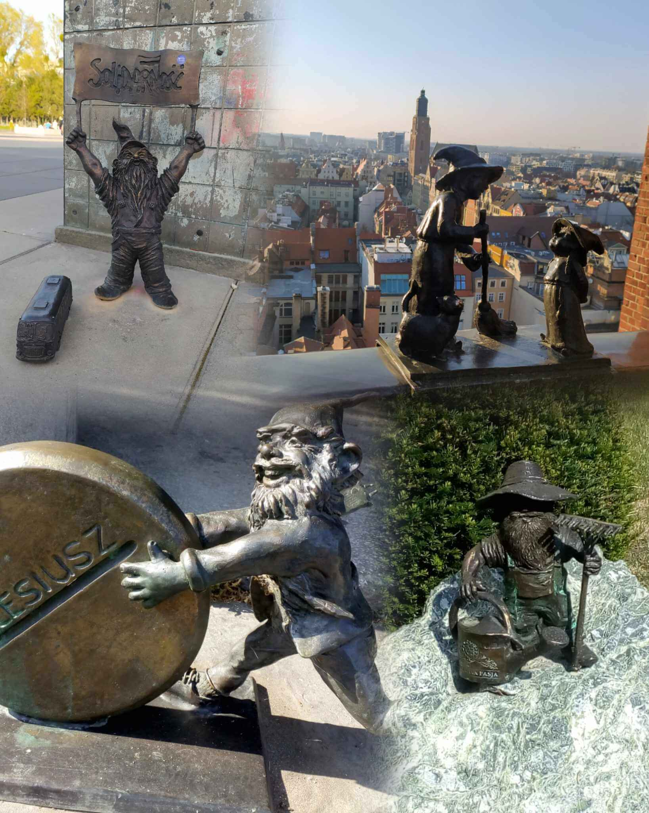
Wroclaw is the real capital of Dwarves. Walking along the streets, you definitely will meet them everywhere. In Polish Wroclawskie Krasnale. Dwarves are the symbol of the City, that tourists just adore. They is believed that gnomes bring good luck and prosperity to the City.
According to legend, they appeared on the territory of modern Wroclaw many centuries ago. Dwarves helped people. They worked in the fields, played with kids, cooked food, cleaned the house and from time immemorial were considered the good spirits of this place.
In the 1980s, the "Orange Alternative” movement appeared as sign of protest against the communist regime. The participants of the movement painted gnomes on City streets, put on orange headgear reminiscen gnomes caps and handed out candy or flowers to passers-by ,that infuriated the authorities.The colour orange crystallised as a response to communist red.Thus the „Dwarf Uprising of Wroclaw” became a silent but obvious form of protest.
At that time, however, there were no bronze statues. Their invasion began in June 2001 when Papa Krasnal (Papa Dwarf), a commemorative figure of the protests at that time, was erected.
This triggered an avalanche of unexpected proportions. Different five dwarfs were erected in the city in 2005 that designed by the sculptor Tomasz Moczek.
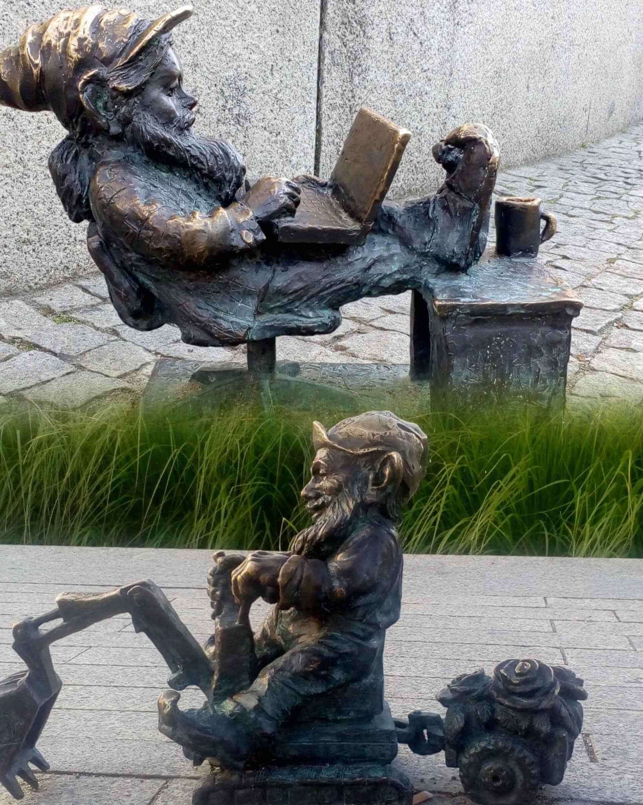

"I did not want it to be samething serious that reminde of a sad time. According to the idea my dwarves were supposed to introduce peple fairyland and show people that somewhere nearby there is fun and interesting world" said Tomasz Moczek.
Since then, the dwarfs have miraculously multiplied almost exponentially. Nowadays every conceivable variation can be found. There is a dwarf orchestra, a prison dwarf, a selfie dwarf, a computer dwarf, a guitar dwarf, cook dwarf, garden dwarf and many more.
According to different sources for today the current number of dwarts are from 500 to 700 bronze statues in Wroclaw. Their number increases every year.Each dwarf has his own name, history, specific place, purpose or profession. The Dwarves' Festival takes place in Wrocław every year in September. It is miracle and fabulios event.
The Wroclaw Dwarves have an official website www.krasnale.pl , where you can find various stories, pictures and even a map of the city showing the location of each dwarf to search for them.
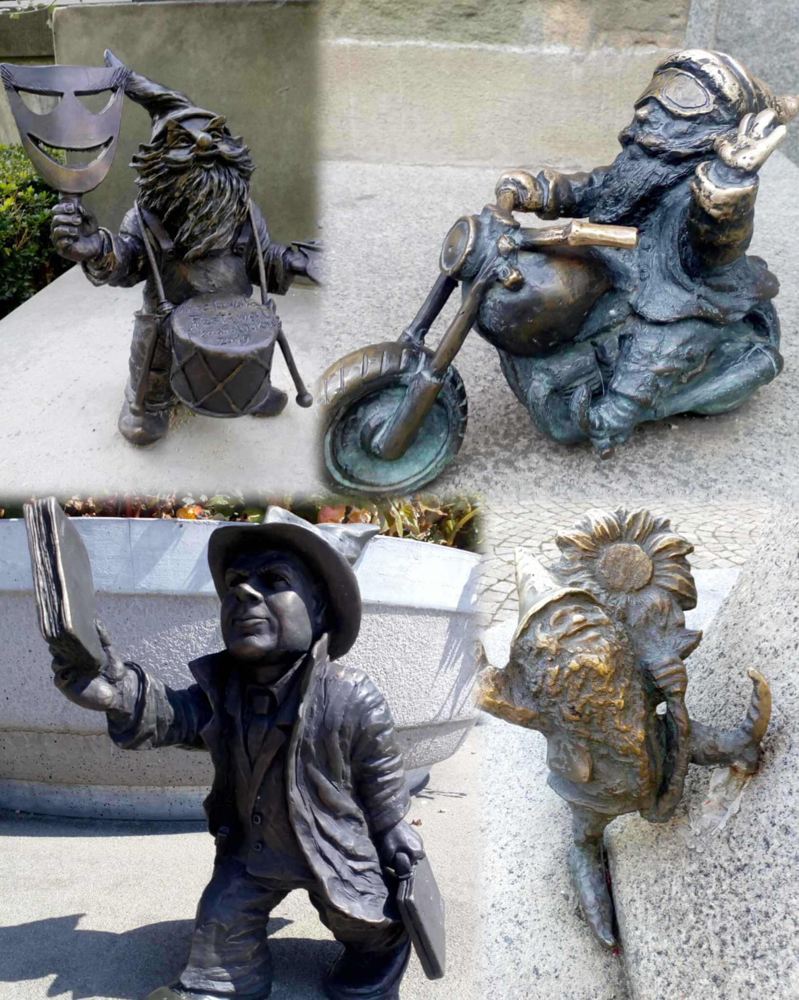
Bridges and Islands
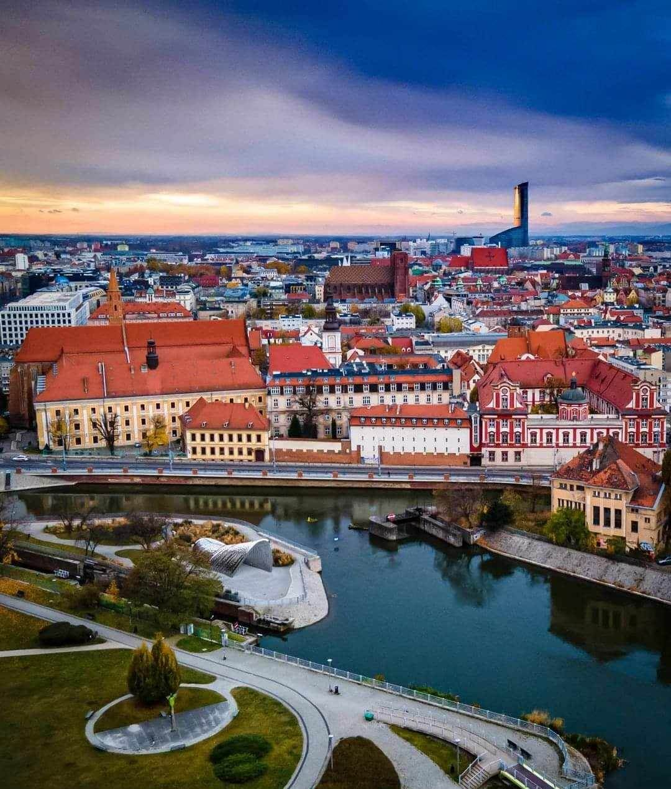
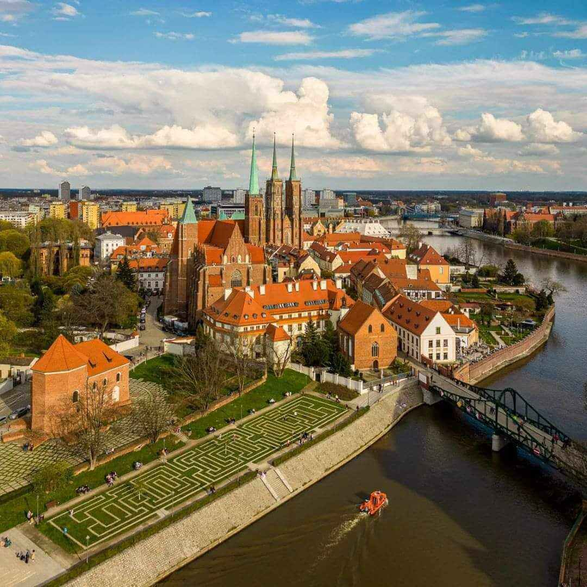
Wroclaw Bridges are monuments of art, technology and architecture.There are more than 100 constructions in Wroclaw, connecting 12 islands of the City.The most famous of them are:
- Grunwaldzki Bridge
- Tumski Bridge
- Piaskowy Bridge
- Redzinski Bridge
- Olawski Bridge
- Zwirzyniecki Bridge
- Słodowy Bridge
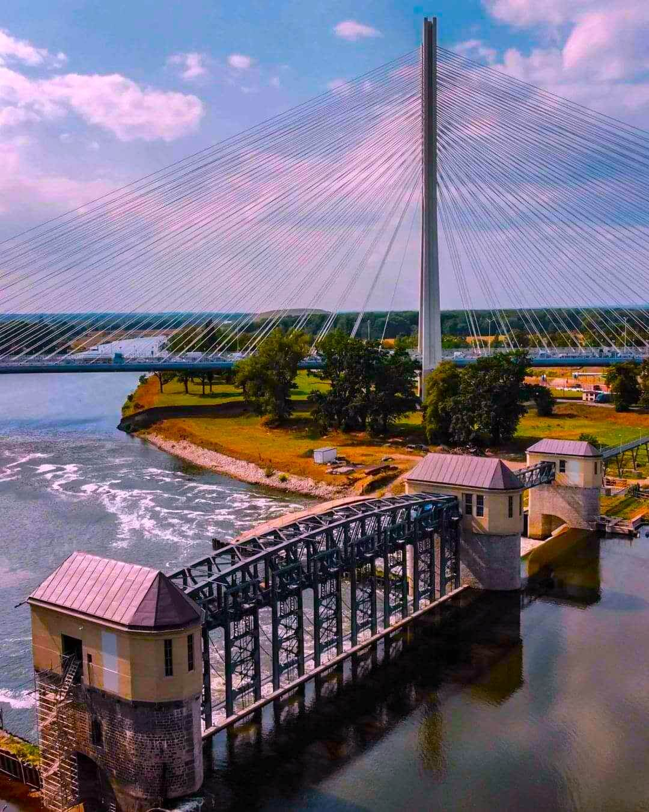
Grunwaldzki Bridge is a symbol of the city and valuable monument of architectural and engineering art. It is one of the most modern suspended steel structures in the world at the beginning of the 20th century. The Bridge was constracted by the famous German architect Richard Plueddemann in 1910. In 1918 the bridge was called the Imperial Bridge.After the First World War it was renamed to the Freedom Bridge. The existing name was given in 1947 in honor of the Battle of Grunwald.
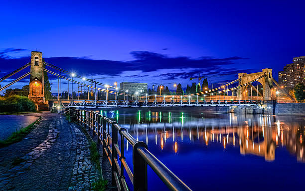
Tumski Bridge is the calling card of Wroclaw and one of the most romantic places in this city. This Bridge, that connects the Tumski Island with the Sand Island, is unquestionably a favourite location for lovers. They leave padlocks here as a symbol of their enduring love for one another. Tumski Bridge was Constructed in 1889, this steel truss bridge has a rich history that intertwines with the development of Wrocław, making it a significant historical and architectural marvel.

Piaskowy Bridge is the oldest bright red iron bridge in Wroclaw that connects Sand Island with the City. This is the shortest way to the Tumski Islang. The bridge was built in 1861 according to the design of Emst Uber. Its name comes from the church which is located nearby. During the Second World War it was very destroyed. And in 1994 it was completely renovated.

Tumski (Cathedral) Island
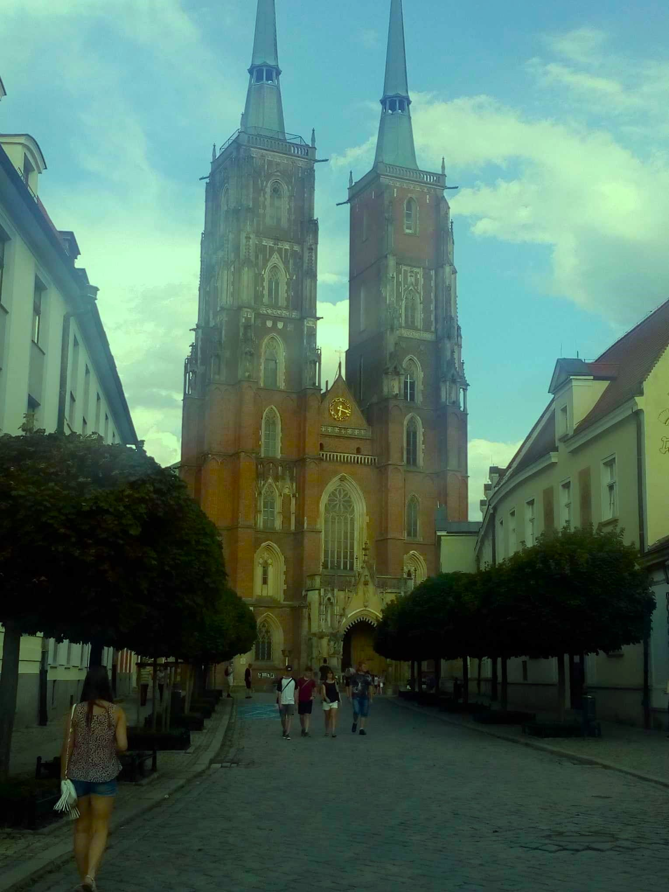
Tumski (Cathedral) Island is a beautiful atmospheric must-visit place, becouse the history of Wroclaw began exactly from this place.
It is the center of spiritual life. and undoubtedly, one of the most famous and stunning sights of Wrocław is the view of Cathedral Island from the Xawery Dunikowski Boulevard, across the Oder River. From this place, you can see the length of Cathedral Road, marked from left to right by the Tumski Bridge, the Collegiate Church of the Holy Cross and Saint Bartholomew, and the two towers of the Cathedral of Saint John the Baptist.
Walking down the quiet cobblestone streets of the bridge, you feel as though you are secluded from the rest of busy Wrocław. If you happen to be here around sunset, you can see a black-cloaked figure in a top hat, making his rounds to light the gas street lamps of Cathedral Island. It is Wroclaw lamplighter. Gas street lamps were once common during the 19th century. All cities had them and the lamplighter was a respectable profession. In the evenings, he would go around lighting each lamp before it got dark and later wake up at sunrise to extinguish them all.Wrocław is one of the two remaining European Union cities where there are gas street lamps (the other one is Zagreb in Croatia).
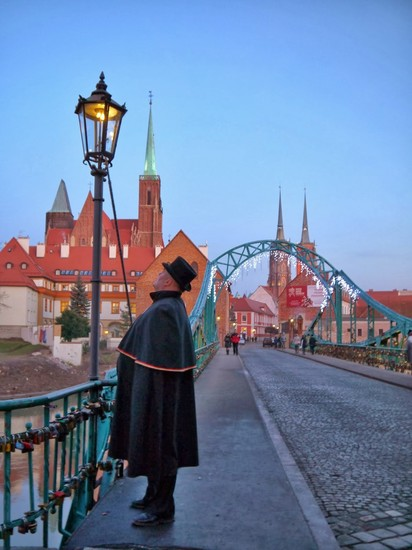
Zoo and Afrycarium
The Wrocław Zoological Garden, known simply as the Wrocław Zoo, is the oldest Zoo in Poland. It was opened in 1865 as the Breslau Zoological Garden while the city was part of Prussia. During the World Wars it was first shut down, then reopened and finally destroyed. After Second World War, it was rebuilt and ultimately opened in 1948 and now it is also the largest (in terms of the number of animals/species) Zoo in the country. The Zoo covers 33 hectares (82 acres) near downtown Wrocław. It is home to about 10,500 animals representing about 1,132 species. In terms of the number of animal species it is the third largest zoological garden in the world.
It takes you whole day (about 6-7 hours) to get around the entire territory, so it's better to come here in the morning and enjoy a leasure walk around the ZOO
And, of course, I advice you to visit the website of Wroclaw ZOO zoo.wroclaw.pl
Afrycarium is a part of Wrocław zoo. The name “Afrycarium” was created from the combination of the words Africa and aquarium.
Africa is an arid, almost waterless continent. So It seems very more strange that the Afrikarium in Wrocław is an oceanarium. All the animals in the oceanarium are inhabitants of the rivers and lakes of Africa, as well as the seas that wash the shores of this continent.
Africarium has 15 000 000 litres of water, there are 21 pools and aquariums where visitors can admire over 350 species of fish. The place on average is visited by 2.5 thousand of people a day.
Here's what you can see in the Africarium:
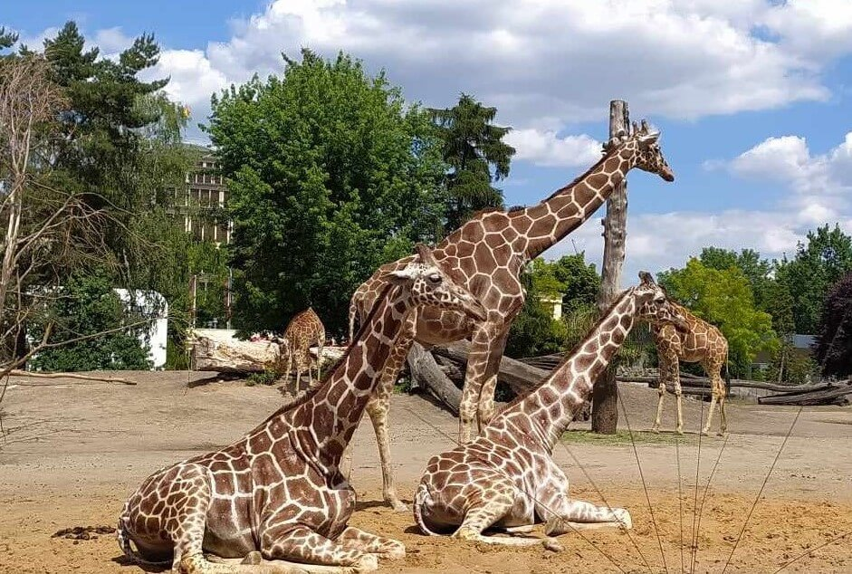
Underwater Worlds of the Red Sea
One of the largest aquariums, where the coral reef and its inhabiting animals are recreated. Harmless fish with bright colors are the easiest to notice, but dangerous zebra wings and sea urchins try not to attract attention.
Animals of the Nile and two huge freshwater lakes.
The largest animals in the area, the hippos, are best observed not while they are resting on the shore, but while swimming. For visitors to see how graceful hippos are in the water.
The fauna of the Mozambique Channel.
The main attraction of this area is a transparent tunnel, behind the walls of which fish swim. Water acts as a magnifying glass, and the more scary two-meter sand sharks look. Stingrays hover around the sharks, green sea turtles push the water apart with powerful paddles, Napoleon fish and small fish move about.
Brave inhabitants of the Skeleton Coast.
These are primarily harbor seals and penguins. In the “Africarium” the seals live both in a closed aquarium with transparent walls and in an open pool, where feeding demonstrations are held. Pinnipeds are accompanied by African penguins.
The mysterious world of the jungle on the Congo River
It's not just crocodiles, but also the cuter manatees. These bozos can weigh 400-450 pounds and eat only plants.
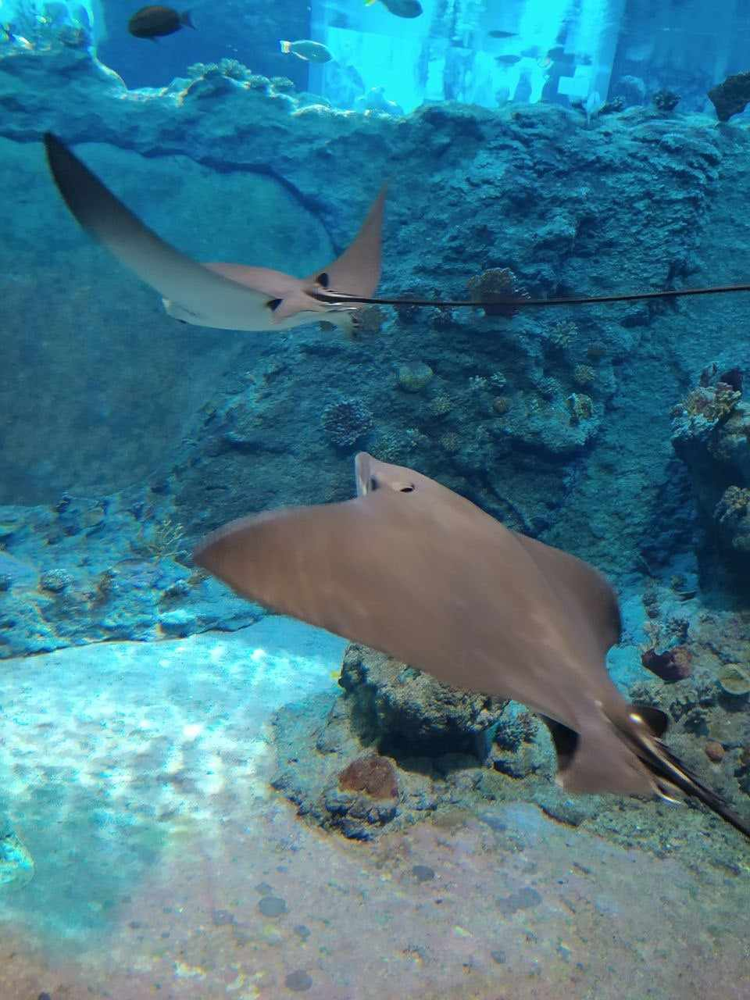
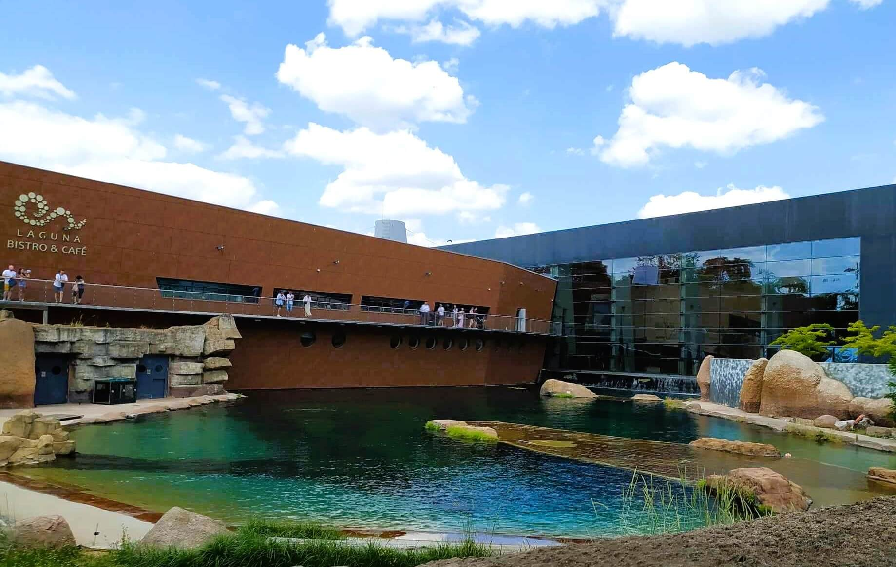
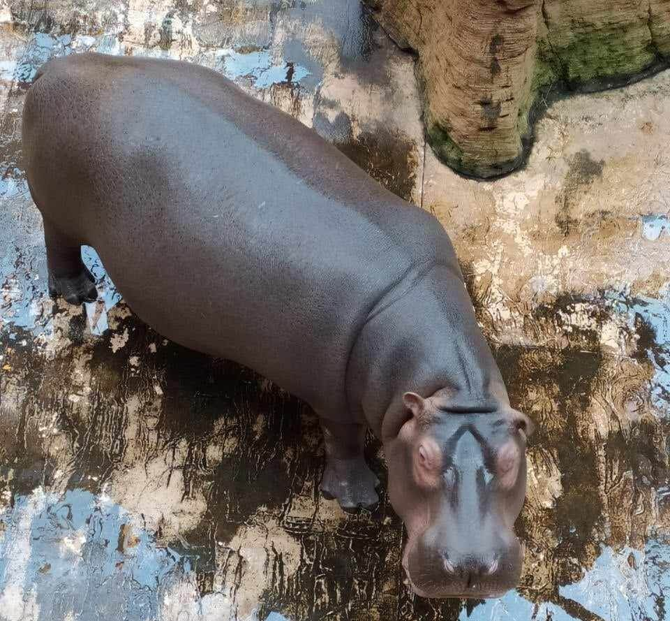
Aquapark and saunarium
The Aquapark in Wroclaw is a huge modern complex with recreational pools (including five indoor pools), a sports pool with eight lanes, Finnish saunas with a Thalasso pool and ice fountain, Jacuzzis, spa and fitness centers
Here everyone will be able to find an activity to their liking. Fans of extreme entertainment will be able to ride the “Turbo” and “Trumpline” slides (there are six of them in total). For lovers of quiet activities or for passive water activity in the water park there is a “lazy river”. It is shallow river with a watercourse. You just can to lie down or sit and it will carry you along the river and it is even a little extreme sometimes.
There is also a pirate ship with water cannons, salt baths and an Arabian hamam. On its territory there is a children's zone with a playground, swimming pool and slides for kids, you can have a snack in food courts, have a good time in cafes and bars.
And most importantly, the water park is open all year round. From winter to summer. Selected pools are heated.
So you definitely should visit this Aquapark if you travel or live in Wroclaw. The ticketa price, opening hours and differemt details you can see on the website aquapark.wroc.pl
Saunarium with a garden and a sauna village. The saunarium is a real oasis of peace. It is a place of calm and relaxation. Among the 20 different saunas, there are traditional baths coming straight from northern Europe, as well as modern ones using infrared. Organized daily fragrance ceremonies and aroma sessions are an extraordinary experience for both our spirit and body. Check which sauna to choose and visit the Aquapark. Welcome!
Wroclaw Multimedia Fountain
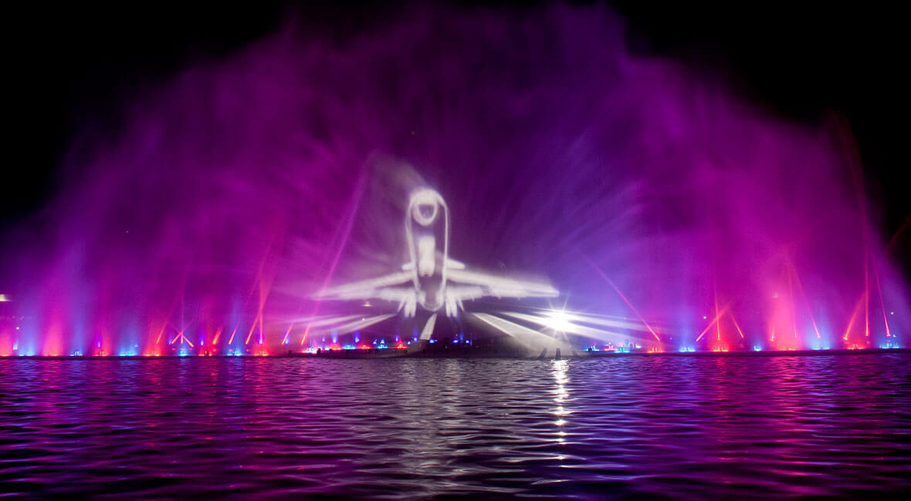
Wrocław Multimedia Fountain (Wrocławska Fontanna Multimedialna) is the biggest fountain in Poland and one of the biggest in Europe. It was initiated on 4th June 2009 on the occasion of the 20th anniversary of the first free elections in the postwar Poland. It is Located in the beautiful Szczytnicki Park, close the Centennial Hall (Hala Stulecia) and Japanese Garden
The Fontain has 300 water jets, which create geysers, water mists, spurts and many other shapes in the basin. The water installation is synchronised with 800 lights. Light, water and music together create spectacular shows.
The Multimedia Fountain plays classical and pop music, for example Madonna, Daft Punk, but one can also hear calm, relaxing music. During the special night shows there are animations, photos and films projected on water. Many of them show the important events from the history of the city and Poland.
It is an impressive and unforgettable performance like a theatrical performance. This place attracts a lot of Polish and tourists
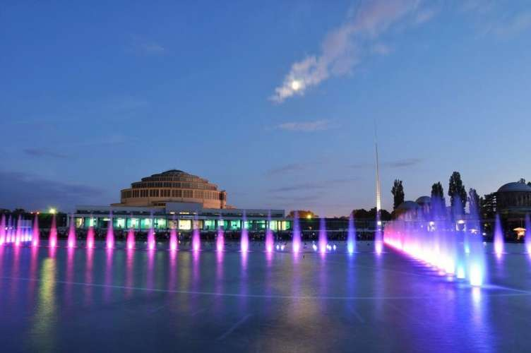
Japanese Garden

Japanese Garden is like the cherry on the cake of the area adjacent to the Centennial Hall.
It is founded on the initiative of the count Fritz von Hochberg, a diplomat and orientalist, with the participation of the Japanese gardener Mankichi Arai, on the occasion of the Centennial Exhibition in 1913.
It combines the features of several types of gardens: public, water, tea ceremony and pebble beach. In terms of its composition, it is thought-out and consistent like a samurai path.
Unusual vegetation, surprising arrangements and symbolic spatial compositions make the Garden a real treasure for botany and ichthyology enthusiasts to this day.
One of the attractions of the place is a pond with giant carp and other species of fish.
Japanese Garden is beautiful in every season of the year.
Botanical Garden
The Botanical Garden of the University of Wrocław is a “living museum” and at the same time a scientific and didactic centre, as well as a favourite leisure destination for Wrocław citizens. It is called an oasis of beauty and tranquillity in the heart of the city, It is situated on the north side of St John the Baptist Cathedral and St Cross Church, partly within the historical Cathedral Island, about 2 km from the Market Square
In 1974, the Wrocław Botanical Garden was included in the list of monuments of the Wrocław Województwo. And 20 years later it was recognized as a historical landmark along with the Old Town.
The greatest decoration of the garden at any time is flowering plants. White, pink, purple, violet rhododendrons are already blossoming, magnolias are fragrant, and the ground is sprinkled with delicate cherry blossom petals in April, when there are no leaves on the trees yet
Dwarves figurines are popular in gardens in different cities and countries. But just in Wrocław the garden dwarves different from their brothers. Firstly, they are part of the huge dwarves tribe that inhabits the City. Secondly, they are not colored, but bronze.
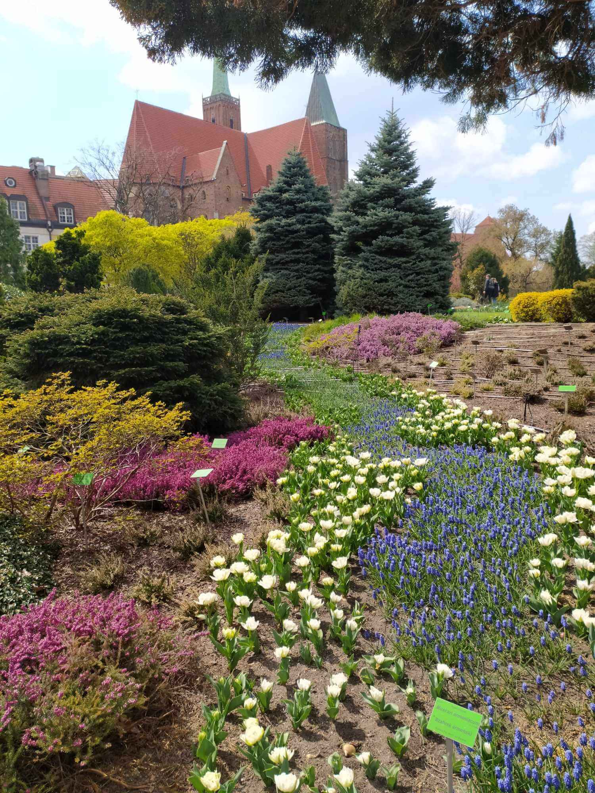
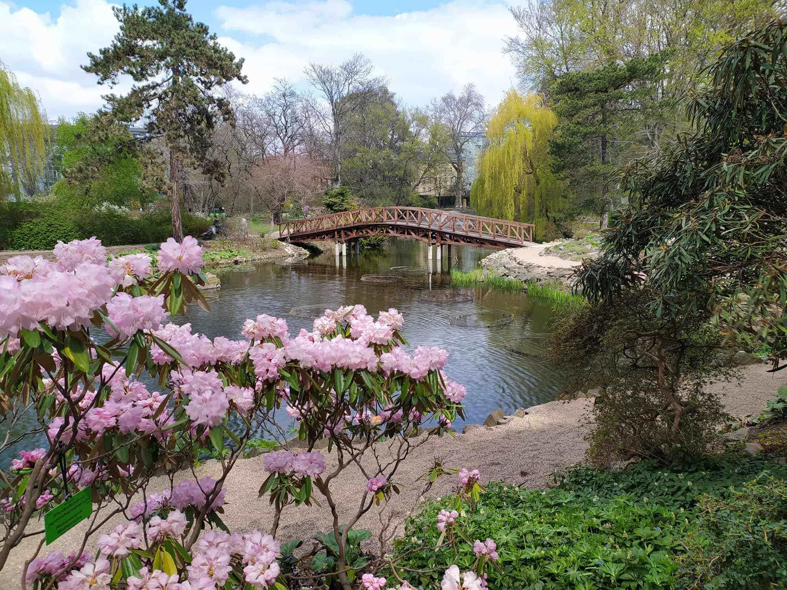
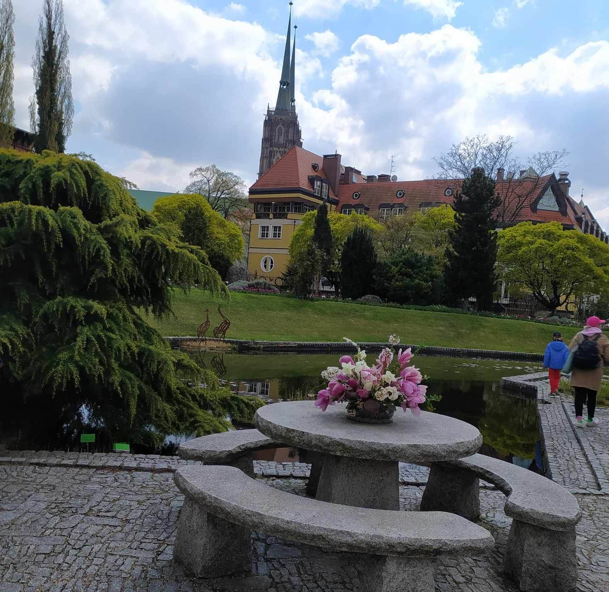
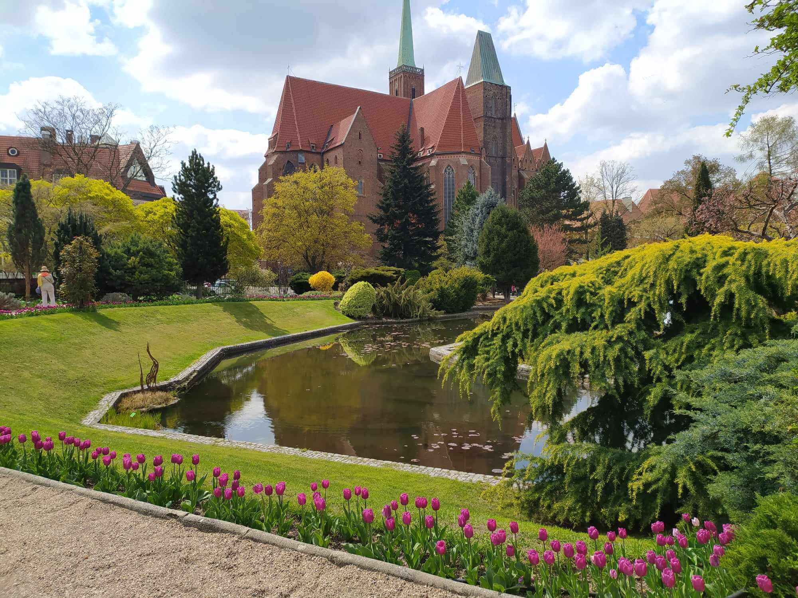
Sky Tower

Sky Tower is a modern multifunctional architectural complex combining retail, service and entertainment spaces, a fully comfortable and flexible office area and exclusive residential apartments. It is the tallest building in City , so it can be seen almost from all parts of City. The tallest tower of the building is 212 meters high and 56 floors. This means that Sky Tower still ranks fourth among the tallest buildings in Poland.
The most interesting thing is the public observation deck on the 49th floor. Here you can admire the panorama of the city and its surroundings. It will give you an unforgettable experience and a view of Wroclaw from a different angle. If you want to get some fresh air, you can visit the outdoor terrace.
The best time to visit this construction during sunset. More precisly, if it's posible to choose the time when it's still light, but it is already getting dark. You can enjoy the panorama in daylight and also you will overview the City in the night lights.
In front of the main entrance to the shopping center there is a one-of-a-kind original sculpture Profile of Time by the eminent Salvador Dali. The work, that cast in bronze, is almost 4 meters high and weighs as much as 1300 kg. This is exhibit number 3 of a series signed by the artist, featuring a total of eight images of “soft watches.”
This sculpture echoes Dali's famous 1931 painting. The Persistence of Memory in which the famous melted watch appeared for the first time. As the watch liquefies over the tree, it forms into a human profile, underlining the interminable relationship between man and time.
Click on button and come on SKY TOWER website www.skytower.pl
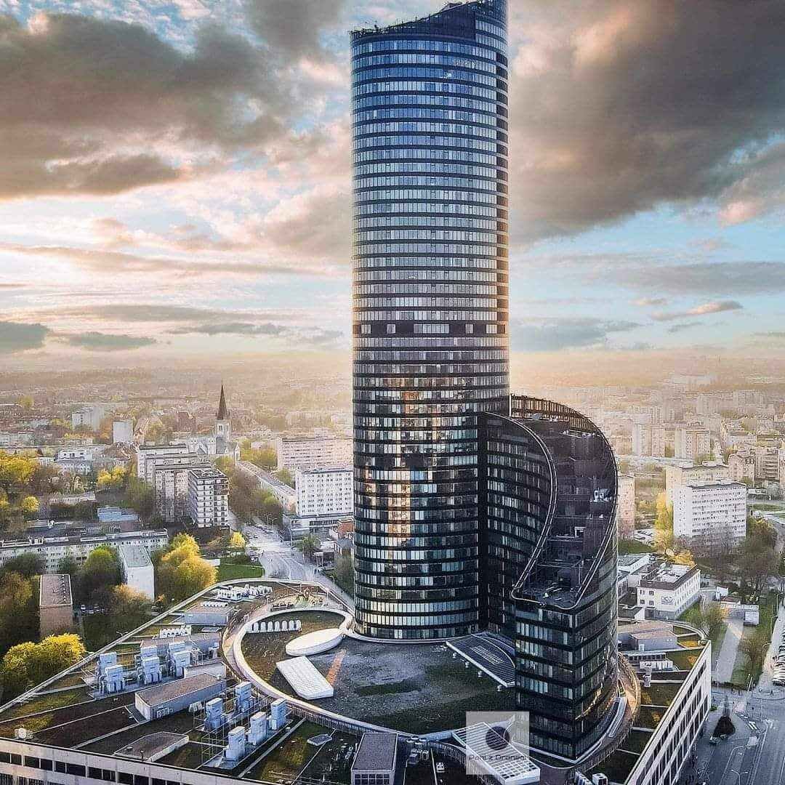
Cat cafe
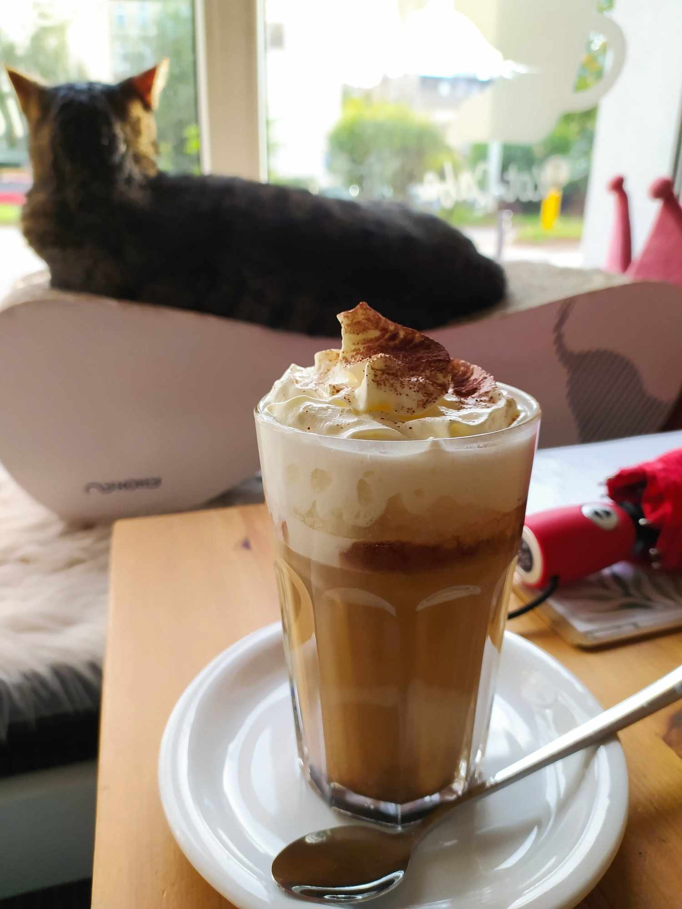
This is place for cat lovers. Especially if you very love cats and haven't them at home for different reasons.
If you've had a hard busy day, you've had stress or you just want to relax. I advice you to visit Cat Cafe, becouse the cats are fuzzy stress relievers
It has been proven that cats relieve stress in a different ways just by being themselves. When you are spending time by petting a fuzzy cat or kitten can cause your body to produce stress reducing hormones. Your heart rate and blood pressure decreases and your anxiety levels return to normal.
If you are hungry you can try cakes or other desserts from menu. There are some special cat cafe latte with names Black Cat, White Cat and Red Cat.
There are some rules and regulations for guests to ensure the comfort of our four-legged friends, becouse cafe is the kingdom of cats, and they are the most important ones.
Homely cozy atmosphere, delicious desserts, drinks amd a fuzzy purring company will make your staying here wonderful and unforgettable.
More detaile in website kotcafewroclaw.pl
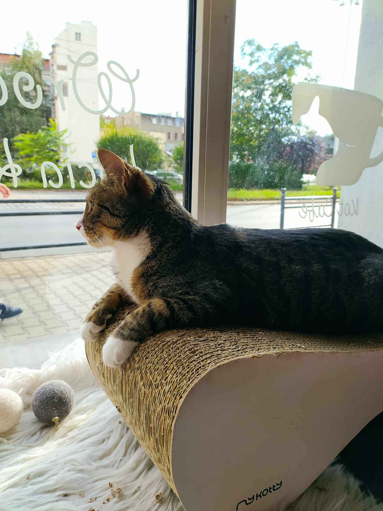